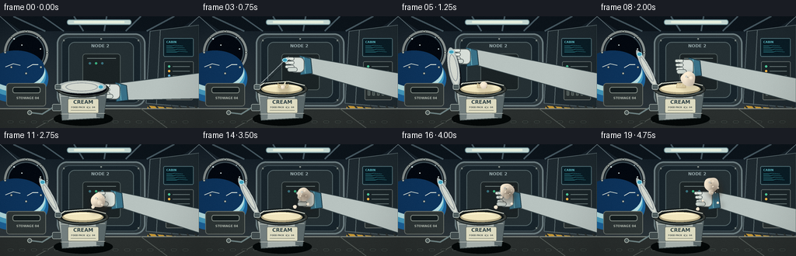
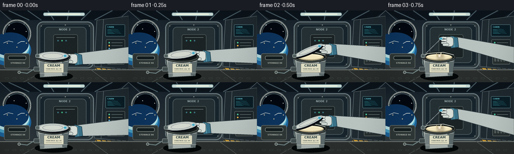

CODING AGENTS AS PIXEL WORLD MODELS
traex/GPT-5.6-Sol · mechanics_0002
点击播放 · 原生 RGB 像素
逐轮保存的候选
回放视频、检查图与代码变化。
每份候选均可单独播放。实际图片检查记录在下方工具轨迹中。
候选 01播放与检查图
点击播放 · 原生 RGB 像素


展开代码变化
--- 上一保存版本
+++ 本次保存版本
@@ -0,0 +1,331 @@
+from pathlib import Path
+import math
+import numpy as np
+from PIL import Image, ImageDraw, ImageFont, ImageFilter
+import artifact_io
+
+# Procedural vector animation, rendered large then downsampled for clean edges.
+W, H, N = 256, 144, 20
+SS = 4
+SW, SH = W * SS, H * SS
+ROOT = Path(__file__).resolve().parent
+
+try:
+ FONT = "/usr/share/fonts/truetype/dejavu/DejaVuSans.ttf"
+ FONT_B = "/usr/share/fonts/truetype/dejavu/DejaVuSans-Bold.ttf"
+except Exception:
+ FONT = FONT_B = None
+
+def sc(v): return int(round(v * SS))
+def box(b): return tuple(sc(v) for v in b)
+def pts(ps): return [(sc(x), sc(y)) for x, y in ps]
+def font(size, bold=False):
+ try: return ImageFont.truetype(FONT_B if bold else FONT, sc(size))
+ except Exception: return ImageFont.load_default()
+
+def line(draw, xy, fill, width=1): draw.line(pts(xy), fill=fill, width=max(1, sc(width)), joint="curve")
+def poly(draw, xy, fill, outline=None, width=1):
+ draw.polygon(pts(xy), fill=fill)
+ if outline: draw.line(pts(xy + [xy[0]]), fill=outline, width=sc(width), joint="curve")
+def ellipse(draw, b, fill, outline=None, width=1): draw.ellipse(box(b), fill=fill, outline=outline, width=sc(width) if outline else 1)
+def rounded(draw, b, radius, fill, outline=None, width=1): draw.rounded_rectangle(box(b), radius=sc(radius), fill=fill, outline=outline, width=sc(width) if outline else 1)
+def text(draw, xy, s, size, fill, bold=False, anchor=None): draw.text((sc(xy[0]), sc(xy[1])), s, font=font(size,bold), fill=fill, anchor=anchor)
+
+def easing(x):
+ x=max(0,min(1,x)); return x*x*(3-2*x)
+
+def transformed_disc(draw, hinge, angle, outer, inner):
+ """Perspective-transformed circular lid connected at its leftmost hinge."""
+ a = math.radians(angle)
+ hx, hy = hinge
+ # lid center and its two apparent radius vectors
+ ux, uy = 30*math.cos(a), -25*math.sin(a)
+ vx, vy = -7*math.sin(a), 8*math.cos(a)
+ cx, cy = hx+ux, hy+uy
+ def ring(scale, color):
+ p=[]
+ for i in range(65):
+ q=2*math.pi*i/64
+ p.append((cx+scale*(ux*math.cos(q)+vx*math.sin(q)),
+ cy+scale*(uy*math.cos(q)+vy*math.sin(q))))
+ poly(draw,p,color)
+ # drop shadow offset
+ p=[]
+ for i in range(65):
+ q=2*math.pi*i/64
+ p.append((cx+2+(ux*math.cos(q)+vx*math.sin(q)),cy+3+(uy*math.cos(q)+vy*math.sin(q))))
+ poly(draw,p,(8,12,18,100))
+ ring(1.05, outer); ring(.87, inner)
+ # concentric embossed groove and a highlight following surface
+ groove=[]
+ for i in range(65):
+ q=2*math.pi*i/64
+ groove.append((cx+.68*(ux*math.cos(q)+vx*math.sin(q)),
+ cy+.68*(uy*math.cos(q)+vy*math.sin(q))))
+ line(draw,groove,(144,154,158,255),1)
+ # small blue pull tab near free edge
+ tx,ty=cx+.82*ux,cy+.82*uy
+ ellipse(draw,(tx-3.4,ty-2.7,tx+3.4,ty+2.7),(66,161,188,255),(185,233,240,255),.7)
+ return (cx,cy,tx,ty)
+
+def organic_blob_layer(cx,cy,r,t, seed=0):
+ """Returns a softly shaded, subtly wobbling opaque cream droplet sprite."""
+ pad = int((r+5)*SS)
+ size=pad*2+1
+ yy,xx=np.mgrid[0:size,0:size]
+ X=(xx-pad)/SS; Y=(yy-pad)/SS
+ ang=np.arctan2(Y,X); rad=np.sqrt(X*X+Y*Y)
+ wob=.055*math.sin(t*.73+seed)+.05*np.sin(3*ang+t*.46+seed)+.025*np.sin(5*ang-t*.31)
+ boundary=r*(1+wob)
+ # antialiased alpha and creamy directional sphere shading
+ alpha=np.clip((boundary-rad)*SS+1.0,0,1)
+ nx=X/max(r,1); ny=Y/max(r,1)
+ shade=np.clip(.98-.13*(.35*nx+.5*ny)-.07*(rad/max(r,1))**2,0,1)
+ base=np.zeros((size,size,4),dtype=np.uint8)
+ base[...,0]=(236*shade+17).clip(0,255)
+ base[...,1]=(218*shade+20).clip(0,255)
+ base[...,2]=(172*shade+42).clip(0,255)
+ base[...,3]=(alpha*255).astype(np.uint8)
+ # glossy highlight
+ im=Image.fromarray(base,'RGBA')
+ d=ImageDraw.Draw(im,'RGBA')
+ hr=max(1,sc(r*.16)); hx=pad-sc(r*.28); hy=pad-sc(r*.32)
+ d.ellipse((hx-hr,hy-hr,hx+hr,hy+hr),fill=(255,255,244,210))
+ d.ellipse((hx+sc(r*.18),hy+sc(r*.06),hx+sc(r*.28),hy+sc(r*.16)),fill=(255,249,222,130))
+ return im, (sc(cx)-pad,sc(cy)-pad)
+
+def paste_blob(img,cx,cy,r,t,seed=0):
+ if r <= .25: return
+ sprite,pos=organic_blob_layer(cx,cy,r,t,seed)
+ # tiny warm shadow halo behind the globule, preserving a solid liquid look
+ halo=Image.new('RGBA',img.size,(0,0,0,0)); hd=ImageDraw.Draw(halo,'RGBA')
+ hd.ellipse((pos[0]+sc(2),pos[1]+sc(3),pos[0]+sprite.width+sc(2),pos[1]+sprite.height+sc(3)),fill=(53,36,22,30))
+ halo=halo.filter(ImageFilter.GaussianBlur(sc(2)))
+ img.alpha_composite(halo)
+ img.alpha_composite(sprite,pos)
+
+def draw_background(t):
+ # Cool cabin gradient.
+ y=np.linspace(0,1,SH)[:,None,None]
+ x=np.linspace(0,1,SW)[None,:,None]
+ top=np.array([17,28,37.],dtype=float); bot=np.array([52,61,65.],dtype=float)
+ arr=np.broadcast_to(top*(1-y)+bot*y,(SH,SW,3)).copy()
+ arr += 4*np.sin((x*2.4+y*.7+t*.02)*math.pi)
+ arr=np.clip(arr,0,255).astype(np.uint8)
+ img=Image.fromarray(arr,'RGB').convert('RGBA'); d=ImageDraw.Draw(img,'RGBA')
+
+ # Receding ceiling / floor ribs establish a compact space-station module.
+ poly(d,[(0,0),(256,0),(226,19),(28,19)],(12,20,27,255))
+ line(d,[(0,0),(49,44)],(100,117,124,150),1)
+ line(d,[(256,0),(208,44)],(100,117,124,150),1)
+ for x0 in [17,55,95,137,181,224]:
+ line(d,[(x0,0),(128+(x0-128)*.63,19)],(70,88,97,180),2)
+ # overhead soft strip light
+ rounded(d,(86,4,169,11),3,(203,222,216,220),(105,139,146,240),1)
+ rounded(d,(95,6,160,8.5),1,(238,247,228,225))
+ # rear hatch, with depth rings
+ rounded(d,(73,22,187,116),13,(42,53,58,255),(108,124,127,255),2)
+ rounded(d,(79,27,181,112),10,(24,36,43,255),(65,81,87,255),1)
+ rounded(d,(88,33,172,105),8,(37,48,52,255),(86,103,106,255),1)
+ # hatch bolts
+ for bx,by in [(82,31),(178,31),(82,108),(178,108),(130,29),(130,110)]:
+ ellipse(d,(bx-1.4,by-1.4,bx+1.4,by+1.4),(154,166,163,255),(22,30,32,255),.5)
+ line(d,[(bx-.7,by),(bx+.7,by)],(44,54,55,255),.5)
+ text(d,(129,38),'NODE 2',5.5,(151,169,171,220),True,'mm')
+ # hatch central dark panel partly behind subject
+ rounded(d,(106,48,155,95),4,(27,35,37,255),(79,92,91,255),1)
+ line(d,[(112,54),(149,54)],(105,120,118,180),1)
+ for j in range(3):
+ ellipse(d,(114+j*8,59,117+j*8,62),(59,174 if j==1 else 113,125,255))
+
+ # Left porthole: structure, stars and curved Earth limb.
+ ellipse(d,(5,18,62,75),(8,13,20,255),(136,145,143,255),3)
+ ellipse(d,(9,22,58,71),(3,8,16,255),(59,75,82,255),2)
+ for sx,sy,br in [(18,29,1),(28,37,.7),(48,27,.6),(52,42,.8),(16,48,.5)]:
+ ellipse(d,(sx-br,sy-br,sx+br,sy+br),(220,236,237,230))
+ # Earth arc through window
+ ellipse(d,(-24,49,62,111),(28,98,153,255))
+ ellipse(d,(-20,48,59,103),(69,156,192,255))
+ ellipse(d,(-18,46,58,97),(180,220,224,255))
+ ellipse(d,(-16,44,57,91),(13,52,93,255))
+ # a few cloud strokes
+ line(d,[(7,65),(17,61),(26,63)],(232,239,225,170),1.1)
+ line(d,[(35,66),(42,62),(49,62)],(236,242,228,150),1)
+ # window clamp bolts
+ for a in range(0,360,45):
+ q=math.radians(a); bx=33.5+27*math.cos(q); by=46.5+27*math.sin(q)
+ ellipse(d,(bx-1.5,by-1.5,bx+1.5,by+1.5),(173,181,174,255),(36,45,48,255),.4)
+
+ # Right instrument rack.
+ poly(d,[(193,19),(256,11),(256,118),(188,112)],(31,42,48,255),(92,108,112,255),1)
+ line(d,[(206,18),(201,114)],(92,106,109,230),1)
+ rounded(d,(210,28,249,52),2,(10,29,38,255),(81,112,119,255),1)
+ # animated telemetry screens
+ text(d,(214,31),'CABIN',3.7,(103,205,214,240),True)
+ for j in range(4):
+ yy=38+j*2.6
+ line(d,[(214,yy),(221+j*2,yy),(224+j*2,yy-1.1),(235+j*2,yy)],(67,190,199,210),.55)
+ rounded(d,(211,58,249,82),2,(26,36,40,255),(91,102,102,255),1)
+ for j in range(3):
+ col=[(79,201,155,255),(247,181,73,255),(100,177,219,255)][j]
+ ellipse(d,(216,63+j*6,219,66+j*6),col)
+ line(d,[(222,64.5+j*6),(244,64.5+j*6)],(102,117,117,220),1)
+ rounded(d,(213,88,248,108),2,(39,47,48,255),(104,111,108,255),1)
+ for j in range(5):
+ xj=217+j*6
+ rounded(d,(xj,93,xj+3,102),.7,(71,82,81,255),(126,137,130,200),.5)
+ # warning stripe and wall handles
+ poly(d,[(190,115),(256,121),(256,128),(189,121)],(202,153,51,210))
+ for x0 in range(190,260,10): line(d,[(x0,115),(x0+8,124)],(43,48,47,190),2)
+ rounded(d,(8,86,59,116),4,(46,54,54,255),(105,112,106,255),1)
+ rounded(d,(16,91,52,99),3,(20,29,31,255),(132,142,135,255),1)
+ text(d,(21,103),'STOWAGE 04',4,(176,184,174,210),True)
+ # Lower work surface, perspective seam lines
+ poly(d,[(0,119),(256,119),(256,144),(0,144)],(42,47,46,255))
+ line(d,[(0,119),(256,119)],(133,140,133,210),1.2)
+ line(d,[(46,144),(91,119)],(82,89,85,220),1)
+ line(d,[(215,144),(181,119)],(82,89,85,220),1)
+ # tie-down tracks
+ for x0 in range(10,250,15): rounded(d,(x0,135,x0+7,137),1,(15,21,21,220),(90,98,93,150),.5)
+ return img
+
+def draw_hand(img, f, lid_info, openp):
+ # White EVA/IVA glove follows the lid tab, then releases and withdraws right.
+ d=ImageDraw.Draw(img,'RGBA')
+ cx,cy,tx,ty=lid_info
+ release=easing((f-5)/5)
+ gx=tx+8+release*69
+ gy=ty+3+release*16
+ # forearm and blue wrist cuff, all behind the lid and cream
+ poly(d,[(256,73+release*10),(256,106+release*8),(gx+24,gy+14),(gx+15,gy-8)],(184,195,192,255),(54,68,72,255),1)
+ poly(d,[(gx+11,gy-9),(gx+25,gy-5),(gx+27,gy+14),(gx+12,gy+16)],(57,113,136,255),(29,55,66,255),1)
+ line(d,[(gx+16,gy-7),(gx+18,gy+14)],(111,181,194,180),1)
+ # palm
+ rounded(d,(gx-1,gy-7,gx+17,gy+13),6,(215,222,216,255),(86,96,96,255),1)
+ # padded fingers curl around tab early; open as they withdraw
+ for i in range(3):
+ yy=gy-7+i*5.2
+ ex=gx-8+release*(i+1)*1.2
+ rounded(d,(ex,yy, gx+4,yy+4.3),2.1,(226,232,225,255),(91,102,101,255),.75)
+ line(d,[(ex+3,yy+1),(ex+5,yy+3.2)],(165,173,169,170),.6)
+ # thumb
+ rounded(d,(gx-5,gy+6,gx+8,gy+12),3,(206,215,209,255),(86,96,96,255),.8)
+
+def draw_container_and_liquid(img,f):
+ d=ImageDraw.Draw(img,'RGBA')
+ # Open action completes by 1.65s.
+ p=easing(f/6.5)
+ ang=112*p
+ hinge=(75,91)
+ # gloved hand is behind lid; calculate lid first, draw hand, then redraw lid atop hand
+ # temporary geometry computation by drawing invisible is not needed
+ a=math.radians(ang); ux,uy=30*math.cos(a),-25*math.sin(a); vx,vy=-7*math.sin(a),8*math.cos(a)
+ lid_info=(hinge[0]+ux,hinge[1]+uy,hinge[0]+ux+.82*ux,hinge[1]+uy+.82*uy)
+ draw_hand(img,f,lid_info,p)
+ d=ImageDraw.Draw(img,'RGBA')
+
+ # Container body (metalized food canister), foreground and firmly tethered.
+ # Ground/contact shadow
+ ellipse(d,(69,123,145,141),(4,8,8,110))
+ # rear outline and body gradient strips
+ poly(d,[(74,92),(138,92),(133,131),(80,134)],(168,177,173,255),(52,63,64,255),1.3)
+ poly(d,[(78,98),(89,98),(88,132),(80,134)],(115,127,127,190))
+ poly(d,[(123,97),(138,92),(133,131),(124,130)],(91,104,106,190))
+ # ribbing
+ for yy in [103,126]: line(d,[(78,yy),(135,yy-1)],(217,221,210,130),.7)
+ # label
+ rounded(d,(87,106,127,125),2,(222,220,194,255),(97,104,98,255),.8)
+ text(d,(107,110.5),'CREAM',6.6,(42,61,65,255),True,'mm')
+ text(d,(107,117.3),'FOOD PACK ⢠04',2.7,(66,76,75,255),True,'mm')
+ line(d,[(91,121),(123,121)],(106,111,103,200),.5)
+ # tether/latch hardware
+ rounded(d,(67,113,79,122),2,(65,76,78,255),(157,168,163,255),.8)
+ line(d,[(67,118),(54,126),(38,124)],(111,131,132,220),2)
+ ellipse(d,(35,121,41,127),(79,91,91,255),(166,177,169,255),1)
+
+ # dark mouth and thick rim; cream meniscus appears as lid opens.
+ ellipse(d,(72,82.5,140,104.5),(53,58,55,255),(21,28,29,255),1)
+ ellipse(d,(77,85.5,136,101.2),(17,23,23,255))
+ visible=easing((p-.18)/.55)
+ if visible>0:
+ ellipse(d,(80,87.2,133,100.3),(177,165,129,int(255*visible)))
+ ellipse(d,(82,87.5,131,97.8),(241,230,190,int(255*visible)))
+ # soft surface sheen
+ line(d,[(87,90.2),(111,88.7),(126,91)],(255,249,220,int(170*visible)),1)
+ # rim highlights
+ line(d,[(76,91),(83,86.3),(115,83.8),(136,89)],(220,226,214,230),1.25)
+ line(d,[(77,98.3),(93,102),(122,101),(136,96)],(94,105,102,230),1)
+
+ # Lid attached to left hinge, over hand and canister rim.
+ transformed_disc(d,hinge,ang,(174,184,182,255),(211,216,207,255))
+ # hinge barrels
+ rounded(d,(70.5,87.5,79,94.5),2,(87,101,102,255),(180,190,185,255),.8)
+ for y0 in [89,92]: line(d,[(71.5,y0),(77.5,y0)],(42,55,57,220),.6)
+
+ # Cream stream and globules: bulge, elongate, pinch off, drift and subdivide.
+ emerge=max(0,(f-3)/16)
+ if f>=3:
+ # meniscus dome / neck remains connected until frame 10
+ e=easing((f-3)/5)
+ mainx=107 + 2.72*max(0,f-4) + .6*math.sin(f*.55)
+ mainy=91 - 2.62*max(0,f-4) + .4*math.sin(f*.4)
+ mainr=2.4 + 6.6*e
+ if f <= 10:
+ # tapered, gently curved cream neck with warm shaded underside
+ neckw=max(1.3,5.8-(f-5)*.48)
+ path=[(102,92),(106-neckw*.7,86),(mainx-mainr*.52,mainy+mainr*.6),
+ (mainx+mainr*.45,mainy+mainr*.55),(111+neckw*.6,87),(114,92)]
+ poly(d,path,(232,217,174,255),(195,177,134,255),.7)
+ line(d,[(108,90),(111,84),(mainx+2,mainy+mainr*.55)],(255,244,211,180),1)
+ paste_blob(img,mainx,mainy,mainr,f,1)
+
+ # physically coherent satellite droplets split off at different times and velocities
+ droplets=[
+ # birth, offset-at-birth, velocity/frame, radius
+ (7, (4,-2), (2.35,-1.45), 3.25),
+ (9, (-3,4), (1.25,-.65), 2.25),
+ (10,(5,3), (3.05,-.15), 1.55),
+ (12,(2,-5),(2.6,-2.25), 1.85),
+ (14,(-4,1),(1.05,1.05), 1.25),
+ (15,(5,-1),(3.35,-1.15), .95),
+ (17,(2,4),(2.15,.55), .75),
+ ]
+ # Parent trajectory sampled at each birth, then independent drift.
+ for i,(birth,off,vel,rad) in enumerate(droplets):
+ if f>=birth:
+ bx=107+2.72*max(0,birth-4)+.6*math.sin(birth*.55)
+ by=91-2.62*max(0,birth-4)+.4*math.sin(birth*.4)
+ age=f-birth
+ rr=rad*min(1,.35+age*.38)
+ cx=bx+off[0]+vel[0]*age
+ cy=by+off[1]+vel[1]*age + .08*age*age*(1 if i in (1,4,6) else -0.2)
+ paste_blob(img,cx,cy,rr,f*.9,i+3)
+
+ # microscopic cream beads make the dispersal readable at the end.
+ specks=[(11,1.8,-2.7),(12,3.4,-1.9),(13,2.1,-.9),(14,3.8,-2.5),(16,2.9,-.4)]
+ for j,(birth,vx0,vy0) in enumerate(specks):
+ if f>=birth:
+ age=f-birth; bx=107+2.72*(birth-4); by=91-2.62*(birth-4)
+ paste_blob(img,bx+vx0*age+(-1)**j*4,by+vy0*age+(j-2)*2,.5+.16*(j%2),f,j+20)
+
+def render_frame(f):
+ t=f/(N-1)
+ img=draw_background(f)
+ draw_container_and_liquid(img,f)
+ # Cinematic cool edge vignette and subtle deterministic sensor grain.
+ rgb=np.asarray(img.convert('RGB').resize((W,H),Image.Resampling.LANCZOS)).astype(np.float32)
+ yy,xx=np.mgrid[0:H,0:W]
+ dist=((xx-W*.5)/(W*.69))**2+((yy-H*.51)/(H*.83))**2
+ vig=np.clip(1-.20*np.clip(dist-.20,0,1),.78,1)[...,None]
+ rgb*=vig
+ rng=np.random.default_rng(2027+f)
+ rgb += rng.normal(0,.65,rgb.shape[:2])[...,None]
+ return np.clip(rgb,0,255).astype(np.uint8)
+
+def main():
+ frames=np.stack([render_frame(i) for i in range(N)],axis=0)
+ artifact_io.save(frames,ROOT)
+ print(f"saved {len(frames)} RGB frames, shape={frames.shape}, range={frames.min()}..{frames.max()}")
+
+if __name__=='__main__':
+ main()
可观测工具轨迹
实际执行的命令与返回图片。
命令 1exit 0
/bin/bash -lc "cat prompt.txt && printf '\\n---RULES---\\n' && cat GENERATION_RULES.md && printf '\\n---SPEC---\\n' && cat task_spec.json"
命令 2exit 0
/bin/bash -lc "find . -maxdepth 2 -type f -printf '%p\\n' | sort && printf '\\nTOOLS\\n' && command -v ffmpeg || true && command -v blender || true && command -v python3 || true"
命令 3exit 0
/bin/bash -lc 'cat artifact_io.py'
命令 4exit 0
/bin/bash -lc "cat > generate.py <<'PY'
from pathlib import Path
import math
import numpy as np
from PIL import Image, ImageDraw, ImageFont, ImageFilter
import artifact_io
# Procedural vector animation, rendered large then downsampled for clean edges.
W, H, N = 256, 144, 20
SS = 4
SW, SH = W * SS, H * SS
ROOT = Path(__file__).resolve().parent
try:
FONT = \"/usr/share/fonts/truetype/dejavu/DejaVuSans.ttf\"
FONT_B = \"/usr/share/fonts/truetype/dejavu/DejaVuSans-Bold.ttf\"
except Exception:
FONT = FONT_B = None
def sc(v): return int(round(v * SS))
def box(b): return tuple(sc(v) for v in b)
def pts(ps): return [(sc(x), sc(y)) for x, y in ps]
def font(size, bold=False):
try: return ImageFont.truetype(FONT_B if bold else FONT, sc(size))
except Exception: return ImageFont.load_default()
def line(draw, xy, fill, width=1): draw.line(pts(xy), fill=fill, width=max(1, sc(width)), joint=\"curve\")
def poly(draw, xy, fill, outline=None, width=1):
draw.polygon(pts(xy), fill=fill)
if outline: draw.line(pts(xy + [xy[0]]), fill=outline, width=sc(width), joint=\"curve\")
def ellipse(draw, b, fill, outline=None, width=1): draw.ellipse(box(b), fill=fill, outline=outline, width=sc(width) if outline else 1)
def rounded(draw, b, radius, fill, outline=None, width=1): draw.rounded_rectangle(box(b), radius=sc(radius), fill=fill, outline=outline, width=sc(width) if outline else 1)
def text(draw, xy, s, size, fill, bold=False, anchor=None): draw.text((sc(xy[0]), sc(xy[1])), s, font=font(size,bold), fill=fill, anchor=anchor)
def easing(x):
x=max(0,min(1,x)); return x*x*(3-2*x)
def transformed_disc(draw, hinge, angle, outer, inner):
\"\"\"Perspective-transformed circular lid connected at its leftmost hinge.\"\"\"
a = math.radians(angle)
hx, hy = hinge
# lid center and its two apparent radius vectors
ux, uy = 30*math.cos(a), -25*math.sin(a)
vx, vy = -7*math.sin(a), 8*math.cos(a)
cx, cy = hx+ux, hy+uy
def ring(scale, color):
p=[]
for i in range(65):
q=2*math.pi*i/64
p.append((cx+scale*(ux*math.cos(q)+vx*math.sin(q)),
cy+scale*(uy*math.cos(q)+vy*math.sin(q))))
poly(draw,p,color)
# drop shadow offset
p=[]
for i in range(65):
q=2*math.pi*i/64
p.append((cx+2+(ux*math.cos(q)+vx*math.sin(q)),cy+3+(uy*math.cos(q)+vy*math.sin(q))))
poly(draw,p,(8,12,18,100))
ring(1.05, outer); ring(.87, inner)
# concentric embossed groove and a highlight following surface
groove=[]
for i in range(65):
q=2*math.pi*i/64
groove.append((cx+.68*(ux*math.cos(q)+vx*math.sin(q)),
cy+.68*(uy*math.cos(q)+vy*math.sin(q))))
line(draw,groove,(144,154,158,255),1)
# small blue pull tab near free edge
tx,ty=cx+.82*ux,cy+.82*uy
ellipse(draw,(tx-3.4,ty-2.7,tx+3.4,ty+2.7),(66,161,188,255),(185,233,240,255),.7)
return (cx,cy,tx,ty)
def organic_blob_layer(cx,cy,r,t, seed=0):
\"\"\"Returns a softly shaded, subtly wobbling opaque cream droplet sprite.\"\"\"
pad = int((r+5)*SS)
size=pad*2+1
yy,xx=np.mgrid[0:size,0:size]
X=(xx-pad)/SS; Y=(yy-pad)/SS
ang=np.arctan2(Y,X); rad=np.sqrt(X*X+Y*Y)
wob=.055*math.sin(t*.73+seed)+.05*np.sin(3*ang+t*.46+seed)+.025*np.sin(5*ang-t*.31)
boundary=r*(1+wob)
# antialiased alpha and creamy directional sphere shading
alpha=np.clip((boundary-rad)*SS+1.0,0,1)
nx=X/max(r,1); ny=Y/max(r,1)
shade=np.clip(.98-.13*(.35*nx+.5*ny)-.07*(rad/max(r,1))**2,0,1)
base=np.zeros((size,size,4),dtype=np.uint8)
base[...,0]=(236*shade+17).clip(0,255)
base[...,1]=(218*shade+20).clip(0,255)
base[...,2]=(172*shade+42).clip(0,255)
base[...,3]=(alpha*255).astype(np.uint8)
# glossy highlight
im=Image.fromarray(base,'RGBA')
d=ImageDraw.Draw(im,'RGBA')
hr=max(1,sc(r*.16)); hx=pad-sc(r*.28); hy=pad-sc(r*.32)
d.ellipse((hx-hr,hy-hr,hx+hr,hy+hr),fill=(255,255,244,210))
d.ellipse((hx+sc(r*.18),hy+sc(r*.06),hx+sc(r*.28),hy+sc(r*.16)),fill=(255,249,222,130))
return im, (sc(cx)-pad,sc(cy)-pad)
def paste_blob(img,cx,cy,r,t,seed=0):
if r <= .25: return
sprite,pos=organic_blob_layer(cx,cy,r,t,seed)
# tiny warm shadow halo behind the globule, preserving a solid liquid look
halo=Image.new('RGBA',img.size,(0,0,0,0)); hd=ImageDraw.Draw(halo,'RGBA')
hd.ellipse((pos[0]+sc(2),pos[1]+sc(3),pos[0]+sprite.width+sc(2),pos[1]+sprite.height+sc(3)),fill=(53,36,22,30))
halo=halo.filter(ImageFilter.GaussianBlur(sc(2)))
img.alpha_composite(halo)
img.alpha_composite(sprite,pos)
def draw_background(t):
# Cool cabin gradient.
y=np.linspace(0,1,SH)[:,None,None]
x=np.linspace(0,1,SW)[None,:,None]
top=np.array([17,28,37.],dtype=float); bot=np.array([52,61,65.],dtype=float)
arr=np.broadcast_to(top*(1-y)+bot*y,(SH,SW,3)).copy()
arr += 4*np.sin((x*2.4+y*.7+t*.02)*math.pi)
arr=np.clip(arr,0,255).astype(np.uint8)
img=Image.fromarray(arr,'RGB').convert('RGBA'); d=ImageDraw.Draw(img,'RGBA')
# Receding ceiling / floor ribs establish a compact space-station module.
poly(d,[(0,0),(256,0),(226,19),(28,19)],(12,20,27,255))
line(d,[(0,0),(49,44)],(100,117,124,150),1)
line(d,[(256,0),(208,44)],(100,117,124,150),1)
for x0 in [17,55,95,137,181,224]:
line(d,[(x0,0),(128+(x0-128)*.63,19)],(70,88,97,180),2)
# overhead soft strip light
rounded(d,(86,4,169,11),3,(203,222,216,220),(105,139,146,240),1)
rounded(d,(95,6,160,8.5),1,(238,247,228,225))
# rear hatch, with depth rings
rounded(d,(73,22,187,116),13,(42,53,58,255),(108,124,127,255),2)
rounded(d,(79,27,181,112),10,(24,36,43,255),(65,81,87,255),1)
rounded(d,(88,33,172,105),8,(37,48,52,255),(86,103,106,255),1)
# hatch bolts
for bx,by in [(82,31),(178,31),(82,108),(178,108),(130,29),(130,110)]:
ellipse(d,(bx-1.4,by-1.4,bx+1.4,by+1.4),(154,166,163,255),(22,30,32,255),.5)
line(d,[(bx-.7,by),(bx+.7,by)],(44,54,55,255),.5)
text(d,(129,38),'NODE 2',5.5,(151,169,171,220),True,'mm')
# hatch central dark panel partly behind subject
rounded(d,(106,48,155,95),4,(27,35,37,255),(79,92,91,255),1)
line(d,[(112,54),(149,54)],(105,120,118,180),1)
for j in range(3):
ellipse(d,(114+j*8,59,117+j*8,62),(59,174 if j==1 else 113,125,255))
# Left porthole: structure, stars and curved Earth limb.
ellipse(d,(5,18,62,75),(8,13,20,255),(136,145,143,255),3)
ellipse(d,(9,22,58,71),(3,8,16,255),(59,75,82,255),2)
for sx,sy,br in [(18,29,1),(28,37,.7),(48,27,.6),(52,42,.8),(16,48,.5)]:
ellipse(d,(sx-br,sy-br,sx+br,sy+br),(220,236,237,230))
# Earth arc through window
ellipse(d,(-24,49,62,111),(28,98,153,255))
ellipse(d,(-20,48,59,103),(69,156,192,255))
ellipse(d,(-18,46,58,97),(180,220,224,255))
ellipse(d,(-16,44,57,91),(13,52,93,255))
# a few cloud strokes
line(d,[(7,65),(17,61),(26,63)],(232,239,225,170),1.1)
line(d,[(35,66),(42,62),(49,62)],(236,242,228,150),1)
# window clamp bolts
for a in range(0,360,45):
q=math.radians(a); bx=33.5+27*math.cos(q); by=46.5+27*math.sin(q)
ellipse(d,(bx-1.5,by-1.5,bx+1.5,by+1.5),(173,181,174,255),(36,45,48,255),.4)
# Right instrument rack.
poly(d,[(193,19),(256,11),(256,118),(188,112)],(31,42,48,255),(92,108,112,255),1)
line(d,[(206,18),(201,114)],(92,106,109,230),1)
rounded(d,(210,28,249,52),2,(10,29,38,255),(81,112,119,255),1)
# animated telemetry screens
text(d,(214,31),'CABIN',3.7,(103,205,214,240),True)
for j in range(4):
yy=38+j*2.6
line(d,[(214,yy),(221+j*2,yy),(224+j*2,yy-1.1),(235+j*2,yy)],(67,190,199,210),.55)
rounded(d,(211,58,249,82),2,(26,36,40,255),(91,102,102,255),1)
for j in range(3):
col=[(79,201,155,255),(247,181,73,255),(100,177,219,255)][j]
ellipse(d,(216,63+j*6,219,66+j*6),col)
line(d,[(222,64.5+j*6),(244,64.5+j*6)],(102,117,117,220),1)
rounded(d,(213,88,248,108),2,(39,47,48,255),(104,111,108,255),1)
for j in range(5):
xj=217+j*6
rounded(d,(xj,93,xj+3,102),.7,(71,82,81,255),(126,137,130,200),.5)
# warning stripe and wall handles
poly(d,[(190,115),(256,121),(256,128),(189,121)],(202,153,51,210))
for x0 in range(190,260,10): line(d,[(x0,115),(x0+8,124)],(43,48,47,190),2)
rounded(d,(8,86,59,116),4,(46,54,54,255),(105,112,106,255),1)
rounded(d,(16,91,52,99),3,(20,29,31,255),(132,142,135,255),1)
text(d,(21,103),'STOWAGE 04',4,(176,184,174,210),True)
# Lower work surface, perspective seam lines
poly(d,[(0,119),(256,119),(256,144),(0,144)],(42,47,46,255))
line(d,[(0,119),(256,119)],(133,140,133,210),1.2)
line(d,[(46,144),(91,119)],(82,89,85,220),1)
line(d,[(215,144),(181,119)],(82,89,85,220),1)
# tie-down tracks
for x0 in range(10,250,15): rounded(d,(x0,135,x0+7,137),1,(15,21,21,220),(90,98,93,150),.5)
return img
def draw_hand(img, f, lid_info, openp):
# White EVA/IVA glove follows the lid tab, then releases and withdraws right.
d=ImageDraw.Draw(img,'RGBA')
cx,cy,tx,ty=lid_info
release=easing((f-5)/5)
gx=tx+8+release*69
gy=ty+3+release*16
# forearm and blue wrist cuff, all behind the lid and cream
poly(d,[(256,73+release*10),(256,106+release*8),(gx+24,gy+14),(gx+15,gy-8)],(184,195,192,255),(54,68,72,255),1)
poly(d,[(gx+11,gy-9),(gx+25,gy-5),(gx+27,gy+14),(gx+12,gy+16)],(57,113,136,255),(29,55,66,255),1)
line(d,[(gx+16,gy-7),(gx+18,gy+14)],(111,181,194,180),1)
# palm
rounded(d,(gx-1,gy-7,gx+17,gy+13),6,(215,222,216,255),(86,96,96,255),1)
# padded fingers curl around tab early; open as they withdraw
for i in range(3):
yy=gy-7+i*5.2
ex=gx-8+release*(i+1)*1.2
rounded(d,(ex,yy, gx+4,yy+4.3),2.1,(226,232,225,255),(91,102,101,255),.75)
line(d,[(ex+3,yy+1),(ex+5,yy+3.2)],(165,173,169,170),.6)
# thumb
rounded(d,(gx-5,gy+6,gx+8,gy+12),3,(206,215,209,255),(86,96,96,255),.8)
def draw_container_and_liquid(img,f):
d=ImageDraw.Draw(img,'RGBA')
# Open action completes by 1.65s.
p=easing(f/6.5)
ang=112*p
hinge=(75,91)
# gloved hand is behind lid; calculate lid first, draw hand, then redraw lid atop hand
# temporary geometry computation by drawing invisible is not needed
a=math.radians(ang); ux,uy=30*math.cos(a),-25*math.sin(a); vx,vy=-7*math.sin(a),8*math.cos(a)
lid_info=(hinge[0]+ux,hinge[1]+uy,hinge[0]+ux+.82*ux,hinge[1]+uy+.82*uy)
draw_hand(img,f,lid_info,p)
d=ImageDraw.Draw(img,'RGBA')
# Container body (metalized food canister), foreground and firmly tethered.
# Ground/contact shadow
ellipse(d,(69,123,145,141),(4,8,8,110))
# rear outline and body gradient strips
poly(d,[(74,92),(138,92),(133,131),(80,134)],(168,177,173,255),(52,63,64,255),1.3)
poly(d,[(78,98),(89,98),(88,132),(80,134)],(115,127,127,190))
poly(d,[(123,97),(138,92),(133,131),(124,130)],(91,104,106,190))
# ribbing
for yy in [103,126]: line(d,[(78,yy),(135,yy-1)],(217,221,210,130),.7)
# label
rounded(d,(87,106,127,125),2,(222,220,194,255),(97,104,98,255),.8)
text(d,(107,110.5),'CREAM',6.6,(42,61,65,255),True,'mm')
text(d,(107,117.3),'FOOD PACK ⢠04',2.7,(66,76,75,255),True,'mm')
line(d,[(91,121),(123,121)],(106,111,103,200),.5)
# tether/latch hardware
rounded(d,(67,113,79,122),2,(65,76,78,255),(157,168,163,255),.8)
line(d,[(67,118),(54,126),(38,124)],(111,131,132,220),2)
ellipse(d,(35,121,41,127),(79,91,91,255),(166,177,169,255),1)
# dark mouth and thick rim; cream meniscus appears as lid opens.
ellipse(d,(72,82.5,140,104.5),(53,58,55,255),(21,28,29,255),1)
ellipse(d,(77,85.5,136,101.2),(17,23,23,255))
visible=easing((p-.18)/.55)
if visible>0:
ellipse(d,(80,87.2,133,100.3),(177,165,129,int(255*visible)))
ellipse(d,(82,87.5,131,97.8),(241,230,190,int(255*visible)))
# soft surface sheen
line(d,[(87,90.2),(111,88.7),(126,91)],(255,249,220,int(170*visible)),1)
# rim highlights
line(d,[(76,91),(83,86.3),(115,83.8),(136,89)],(220,226,214,230),1.25)
line(d,[(77,98.3),(93,102),(122,101),(136,96)],(94,105,102,230),1)
# Lid attached to left hinge, over hand and canister rim.
transformed_disc(d,hinge,ang,(174,184,182,255),(211,216,207,255))
# hinge barrels
rounded(d,(70.5,87.5,79,94.5),2,(87,101,102,255),(180,190,185,255),.8)
for y0 in [89,92]: line(d,[(71.5,y0),(77.5,y0)],(42,55,57,220),.6)
# Cream stream and globules: bulge, elongate, pinch off, drift and subdivide.
emerge=max(0,(f-3)/16)
if f>=3:
# meniscus dome / neck remains connected until frame 10
e=easing((f-3)/5)
mainx=107 + 2.72*max(0,f-4) + .6*math.sin(f*.55)
mainy=91 - 2.62*max(0,f-4) + .4*math.sin(f*.4)
mainr=2.4 + 6.6*e
if f <= 10:
# tapered, gently curved cream neck with warm shaded underside
neckw=max(1.3,5.8-(f-5)*.48)
path=[(102,92),(106-neckw*.7,86),(mainx-mainr*.52,mainy+mainr*.6),
(mainx+mainr*.45,mainy+mainr*.55),(111+neckw*.6,87),(114,92)]
poly(d,path,(232,217,174,255),(195,177,134,255),.7)
line(d,[(108,90),(111,84),(mainx+2,mainy+mainr*.55)],(255,244,211,180),1)
paste_blob(img,mainx,mainy,mainr,f,1)
# physically coherent satellite droplets split off at different times and velocities
droplets=[
# birth, offset-at-birth, velocity/frame, radius
(7, (4,-2), (2.35,-1.45), 3.25),
(9, (-3,4), (1.25,-.65), 2.25),
(10,(5,3), (3.05,-.15), 1.55),
(12,(2,-5),(2.6,-2.25), 1.85),
(14,(-4,1),(1.05,1.05), 1.25),
(15,(5,-1),(3.35,-1.15), .95),
(17,(2,4),(2.15,.55), .75),
]
# Parent trajectory sampled at each birth, then independent drift.
for i,(birth,off,vel,rad) in enumerate(droplets):
if f>=birth:
bx=107+2.72*max(0,birth-4)+.6*math.sin(birth*.55)
by=91-2.62*max(0,birth-4)+.4*math.sin(birth*.4)
age=f-birth
rr=rad*min(1,.35+age*.38)
cx=bx+off[0]+vel[0]*age
cy=by+off[1]+vel[1]*age + .08*age*age*(1 if i in (1,4,6) else -0.2)
paste_blob(img,cx,cy,rr,f*.9,i+3)
# microscopic cream beads make the dispersal readable at the end.
specks=[(11,1.8,-2.7),(12,3.4,-1.9),(13,2.1,-.9),(14,3.8,-2.5),(16,2.9,-.4)]
for j,(birth,vx0,vy0) in enumerate(specks):
if f>=birth:
age=f-birth; bx=107+2.72*(birth-4); by=91-2.62*(birth-4)
paste_blob(img,bx+vx0*age+(-1)**j*4,by+vy0*age+(j-2)*2,.5+.16*(j%2),f,j+20)
def render_frame(f):
t=f/(N-1)
img=draw_background(f)
draw_container_and_liquid(img,f)
# Cinematic cool edge vignette and subtle deterministic sensor grain.
rgb=np.asarray(img.convert('RGB').resize((W,H),Image.Resampling.LANCZOS)).astype(np.float32)
yy,xx=np.mgrid[0:H,0:W]
dist=((xx-W*.5)/(W*.69))**2+((yy-H*.51)/(H*.83))**2
vig=np.clip(1-.20*np.clip(dist-.20,0,1),.78,1)[...,None]
rgb*=vig
rng=np.random.default_rng(2027+f)
rgb += rng.normal(0,.65,rgb.shape[:2])[...,None]
return np.clip(rgb,0,255).astype(np.uint8)
def main():
frames=np.stack([render_frame(i) for i in range(N)],axis=0)
artifact_io.save(frames,ROOT)
print(f\"saved {len(frames)} RGB frames, shape={frames.shape}, range={frames.min()}..{frames.max()}\")
if __name__=='__main__':
main()
PY
python3 generate.py
ls -lh pixels.npz inspection.png transition_check.png index.html frames/00.png frames/19.png"命令 5exit 0
/bin/bash -lc "python3 - <<'PY'
import numpy as np
from PIL import Image
from pathlib import Path
z=np.load('pixels.npz')['pixels']
assert z.shape==(144,256,20)
assert len(list(Path('frames').glob('*.png')))==20
ims=np.stack([np.asarray(Image.open(f'frames/{i:02d}.png')) for i in range(20)])
assert ims.shape==(20,144,256,3) and ims.dtype==np.uint8
assert np.array_equal(((ims.astype(np.uint32)[...,0]<<16)|(ims.astype(np.uint32)[...,1]<<8)|ims.astype(np.uint32)[...,2]).transpose(1,2,0),z)
changes=np.mean(np.abs(np.diff(ims.astype(float),axis=0)),axis=(1,2,3))
print('validated frames:',ims.shape,ims.dtype)
print('successive mean absolute changes:',np.round(changes,2).tolist())
print('all frames distinct:',len({im.tobytes() for im in ims})==20)
print('artifacts present:',all(Path(x).is_file() for x in ['pixels.npz','index.html','inspection.png','transition_check.png']))
PY"保存候选 1 份；完成命令 5 次；可验证图片返回 0 张。原始 API 响应与完整日志保留在本地。